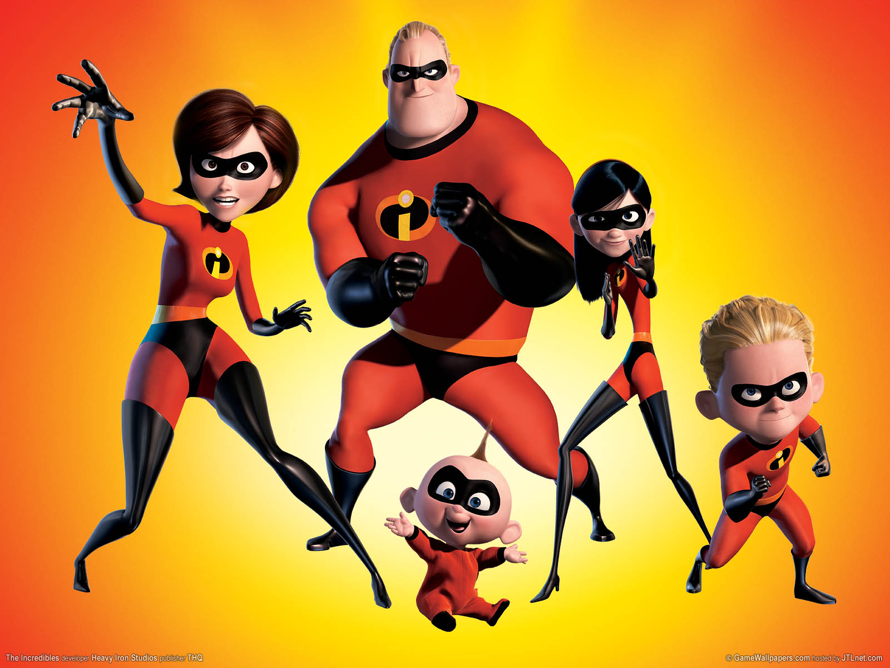
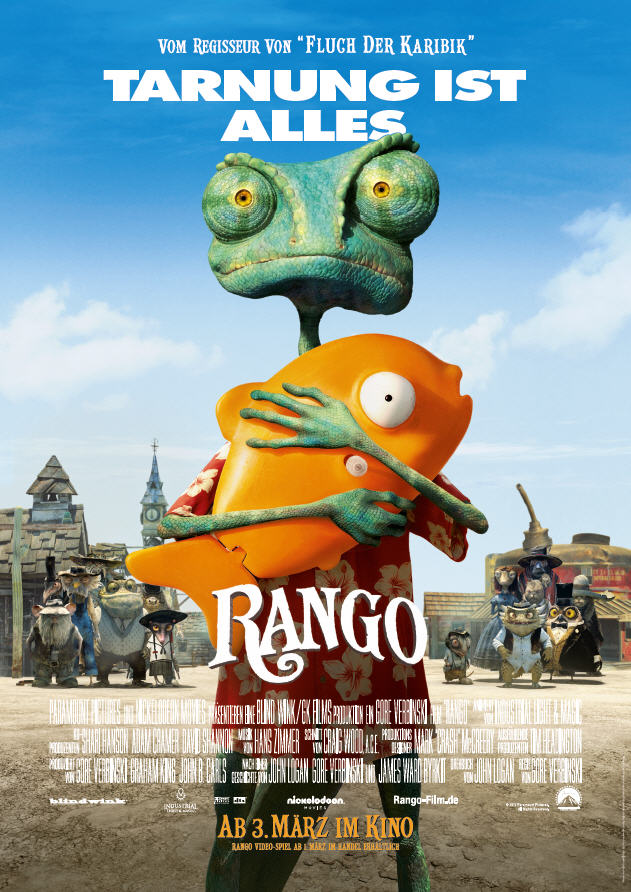
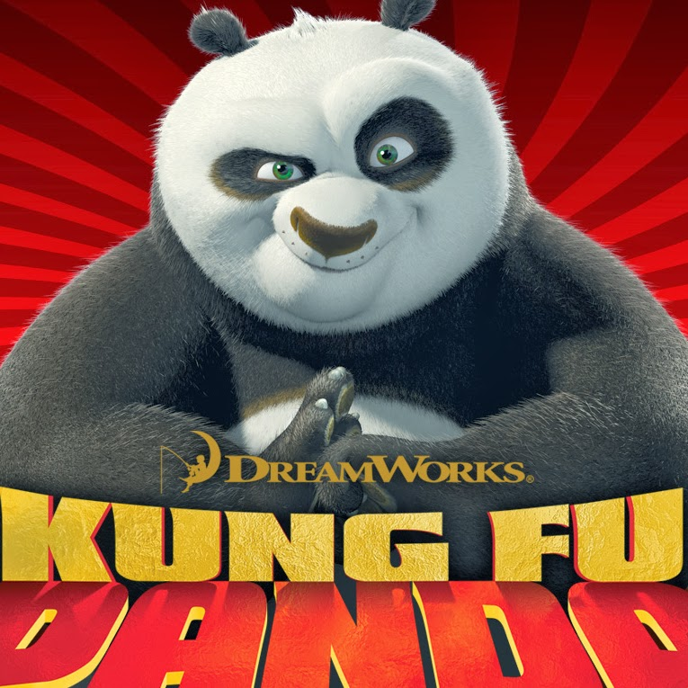
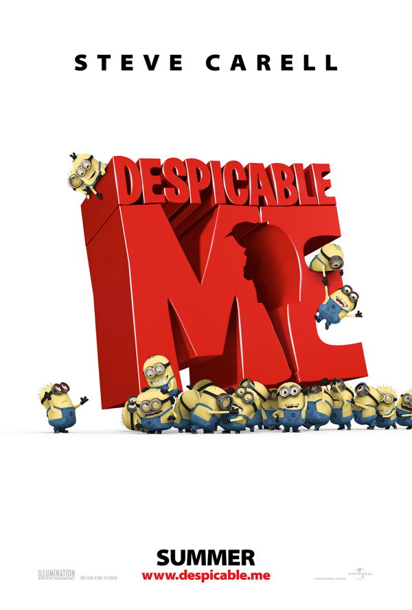
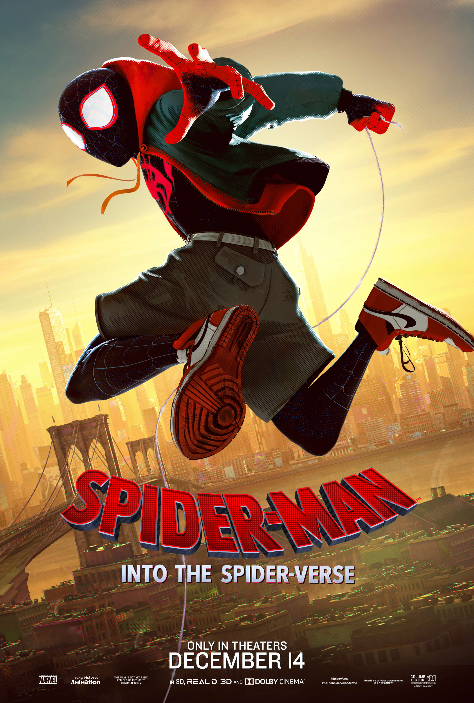
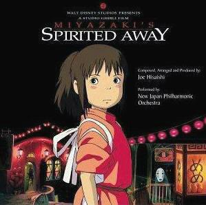

5.1: The Incredibles
Ratings : 🌟 8.0
Genre :ActionAnimationAdventure
Release Date : 5 November 2004
Watch-Time : 1h 55min.
Director : Brad Bird
Starring : Craig T. Nelson, Holly Hunter, Sarah Vowell, Spencer Fox, Jason Lee, Samuel L. Jackson, Elizabeth Peña
Box-Office : $633 million
Storyline:
Bob Parr (A.K.A. Mr. Incredible), and his wife Helen (A.K.A. Elastigirl), are the world's greatest famous crime-fighting superheroes in Metroville. Always saving lives and battling evil on a daily basis. But fifteen years later, they have been forced to adopt civilian identities and retreat to the suburbs where they have no choice but to retire as superheroes to live a "normal life" with their three children Violet, Dash and Jack-Jack (who were secretly born with superpowers). Itching to get back into action, Bob gets his chance when a mysterious communication summons him to a remote island for a top secret assignment. He soon discovers that it will take a super family effort to rescue the world from total destruction.
5.2: Rango
Ratings : 🌟 7.2
Genre : AnimationAdventureComedy
Release Date : 4 March 2011
Watch-Time : 1h 47min.
Director : Gore Verbinski
Starring : Johnny Depp, Isla Fisher, Abigail Breslin, Alfred Molina, Bill Nighy, Ned Beatty, Harry Dean Stanton, Ray Winstone, Timothy Olyphant
Box-Office : $245.7 million
Storyline:
Rango is a pet chameleon always on the lookout for action and adventure, except the fake kind, where he directs it and acts in it. After a car accident, he winds up in an old western town called Dirt. What this town needs the most is water, but they also need a hero and a sheriff. The thirsty Rango instantly takes on the role of both and selfishly agrees to take on the case of their missing water.
4.1: Ice Age

Ratings : 🌟 7.6
Genre : AnimationAdventureComedy
Release Date : 15 March 2002
Watch-Time : 1h 21min.
Director : Chris Wedge, Carlos Saldanha
Starring : Ray Romano, John Leguizamo, Denis Leary
Box-Office : $383.3 million
Storyline:
Back when the Earth was being overrun by glaciers, and animals were scurrying to save themselves from the upcoming Ice Age, a sloth named Sid, a woolly mammoth named Manny, and a saber-toothed tiger named Diego are forced to become unlikely heroes. The three reluctantly come together when they have to return a human child to its father while braving the deadly elements of the impending Ice Age.
4.2: Ratatouille

Ratings : 🌟 8.0
Genre : AnimationAdventureComedy
Release Date : 29 June 2007
Watch-Time : 1h 51min.
Director : Brad Bird, Jan Pinkava
Starring : Patton Oswalt, Ian Holm, Lou Romano, Janeane Garofalo, Brad Garrett, Peter O'Toole, Brian Dennehy, Peter Sohn, Will Arnett
Box-Office : $620.7 million
Storyline:
A rat named Remy dreams of becoming a great French chef despite his family's wishes and the obvious problem of being a rat in a decidedly rodent-phobic profession. When fate places Remy in the sewers of Paris, he finds himself ideally situated beneath a restaurant made famous by his culinary hero, Auguste Gusteau. Despite the apparent dangers of being an unlikely, and certainly unwanted, visitor in the kitchen of a fine French restaurant, Remy's passion for cooking soon sets into motion a hilarious and exciting rat race that turns the culinary world of Paris upside down.
3.1: Kung Fu Panda
Ratings : 🌟 7.5
Genre : ActionAnimationComedy
Release Date : Kung Fu Panda
Watch-Time : 1h 32min.
Director : Mark Osborne, John Stevenson
Starring : Jack Black
Box-Office : $631.7 million
Storyline:
It's the story about a lazy, irreverent slacker panda, named Po, who is the biggest fan of Kung Fu around...which doesn't exactly come in handy while working every day in his family's noodle shop. Unexpectedly chosen to fulfill an ancient prophecy, Po's dreams become reality when he joins the world of Kung Fu and studies alongside his idols, the legendary Furious Five -- Tigress, Crane, Mantis, Viper and Monkey -- under the leadership of their guru, Master Shifu. But before they know it, the vengeful and treacherous snow leopard Tai Lung is headed their way, and it's up to Po to defend everyone from the oncoming threat. Can he turn his dreams of becoming a Kung Fu master into reality? Po puts his heart - and his girth - into the task, and the unlikely hero ultimately finds that his greatest weaknesses turn out to be his greatest strengths.
3.2: Despicable Me
Ratings : 🌟 7.6
Genre : AnimationComedyCrime
Release Date : 9 July 2010
Watch-Time : 1h 35min.
Director : Pierre Coffin, Chris Renaud
Starring : Steve Carell, Jason Segel, Russell Brand, Miranda Cosgrove, Kristen Wiig, Will Arnett, Julie Andrews
Box-Office : $543.1 million
Storyline:
In a happy suburban neighborhood surrounded by white picket fences with flowering rose bushes, sits a black house with a dead lawn. Unbeknownst to the neighbors, hidden beneath this house is a vast secret hideout. Surrounded by a small army of minions, we discover Gru (Steve Carell), planning the biggest heist in the history of the world. He is going to steal the moon. Gru delights in all things wicked. Armed with his arsenal of shrink rays, freeze rays, and battle-ready vehicles for land and air, he vanquishes all who stand in his way. Until the day he encounters the immense will of three little orphaned girls who look at him and see something that no one else has ever seen: a potential Dad. The world's greatest villain has just met his greatest challenge: three little girls named Margo (Miranda Cosgrove), Edith (Dana Gaier), and Agnes (Elsie Fisher).
2.1: Spider-Man: Into the Spider-Verse
Ratings : 🌟 8.4
Genre : ActionAdventureAnimation
Release Date : 14 December 2018
Watch-Time : 1h 57min.
Director : Bob Persichetti, Peter Ramsey
Starring : Shameik Moore, Jake Johnson, Hailee Steinfeld, Mahershala Ali, Brian Tyree Henry, Lily Tomlin, Luna Lauren Velez, John Mulaney, Kimiko Glenn, Nicolas Cage, Liev Schreiber
Box-Office : $375.5 million
Storyline:
Phil Lord and Christopher Miller, the creative minds behind The Lego Movie and 21 Jump Street, bring their unique talents to a fresh vision of a different Spider-Man Universe, with a groundbreaking visual style that's the first of its kind. "Spider-Man(TM): Into the Spider-Verse" introduces Brooklyn teen Miles Morales (Shameik Moore), and the limitless possibilities of the Spider-Verse, where more than one can wear the mask.
2.2: The Adventures of Tintin

Ratings : 🌟 7.3
Genre : ActionAdventure`Animation`
Release Date : 21 December 2011
Watch-Time : 1h 47min.
Director : Steven Spielberg
Starring : Jamie Bell, Andy Serkis, Daniel Craig
Box-Office : $374 million
Storyline:
Having bought a model ship, the Unicorn, for a pound off a market stall Tintin is initially puzzled that the sinister Mr. Sakharine should be so eager to buy it from him, resorting to murder and kidnapping Tintin - accompanied by his marvellous dog Snowy - to join him and his gang as they sail to Morocco on an old cargo ship. Sakharine has bribed the crew to revolt against the ship's master, drunken Captain Haddock, but Tintin, Snowy and Haddock escape, arriving in Morocco at the court of a sheikh, who also has a model of the Unicorn. Haddock tells Tintin that over three hundred years earlier his ancestor Sir Francis Haddock was forced to scuttle the original Unicorn when attacked by a piratical forebear of Sakharine but he managed to save his treasure and provide clues to its location in three separate scrolls, all of which were secreted in models of the Unicorn.
1.1: Spirited Away
Ratings : 🌟 8.6
Genre : AnimationAdventureFamily
Release Date : 28 March 2003
Watch-Time : 2h 5min.
Director : Hayao Miyazaki
Starring : Rumi Hiiragi, Miyu Irino, Mari Natsuki, Takeshi Naito, Yasuko Sawaguchi, Tsunehiko Kamijō, Takehiko Ono, Bunta Sugawara
Box-Office : $383.4 million
Storyline:
Chihiro and her parents are moving to a small Japanese town in the countryside, much to Chihiro's dismay. On the way to their new home, Chihiro's father makes a wrong turn and drives down a lonely one-lane road which dead-ends in front of a tunnel. Her parents decide to stop the car and explore the area. They go through the tunnel and find an abandoned amusement park on the other side, with its own little town. When her parents see a restaurant with great-smelling food but no staff, they decide to eat and pay later. However, Chihiro refuses to eat and decides to explore the theme park a bit more. She meets a boy named Haku who tells her that Chihiro and her parents are in danger, and they must leave immediately. She runs to the restaurant and finds that her parents have turned into pigs. In addition, the theme park turns out to be a town inhabited by demons, spirits, and evil gods. At the center of the town is a bathhouse where these creatures go to relax.
1.2: Your Name

Ratings : 🌟 8.4
Genre : AnimationDramaFantasy
Release Date : 7 April 2017
Watch-Time : 1h 46min.
Director : Makoto Shinkai
Starring : Ryunosuke Kamiki, Mone Kamishiraishi
Box-Office : $358.3 million
Storyline:
Mitsuha is the daughter of the mayor of a small mountain town. She's a straightforward high school girl who lives with her sister and her grandmother and has no qualms about letting it be known that she's uninterested in Shinto rituals or helping her father's electoral campaign. Instead she dreams of leaving the boring town and trying her luck in Tokyo. Taki is a high school boy in Tokyo who works part-time in an Italian restaurant and aspires to become an architect or an artist. Every night he has a strange dream where he becomes...a high school girl in a small mountain town.